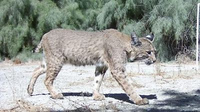
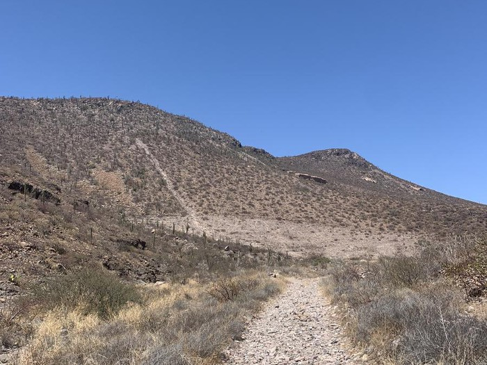
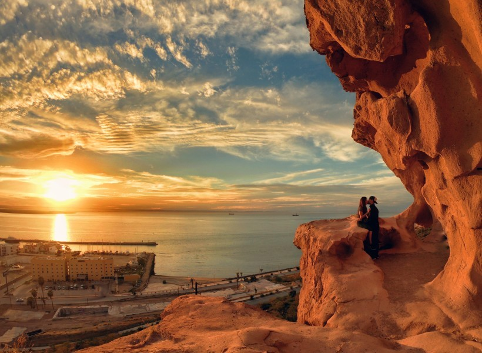

Isla Espiritu Santo

FAUNA
(Fauna común en la región)
El cerro de la calavera es un lugar muy bello, en donde la gente puede disfrutar de la naturaleza, el aire fresco y la tranquilidad que ofrece este lugar, además de poder observar la fauna que habita en el cerro.
La fauna que se encuentra en el cerro de la calavera esta compuesta por reptiles como la iguana del desierto, lagartiga cola de latigo y serpientes como la culebra chirrionera y la cascabel de baja california; aves como la paloma pitayera, correcaminos, zopilote aura, entre otras; mamíferos como la liebre cola negra, zorro del desierto, y raton de cactus; y artrópodos como el alacran del desierto, tarántula de baja california y hormiga arriera.

FLORA
(Flora del cerro de la calavera)
La flora del cerro de la calavera es muy similar al de toda la región mayormente compuesta de cactaceas como la choya, garambullos y cardones, ademas de pequeños matorrales, por lo mismo de que su vegetacion se compone de arboles y plantas deserticas no suele haber mucha sombra por lo que si se quiere hacer senderismo se recomienda ir en la mañana o al anochecer y traer mucha agua, algo con lo que te puedas proteger del sol.

ACERCA DEL CERRO DE LA CALAVERA
(Monumento geológico y monumento natural)
El cerro de la calavera es una formacion rocosa la cual se encuentra sobre la carretera escenica la cual conecta la ciudad de La Paz y el puerto de Pichilingue, justo al frente del hotel city express y termina llegando al entronque con el pedregal La Paz, siendo aproximada mente 2.10 km.
Este lugar es ideal para practicar senderismo y disfrutar de la naturaleza. El sendero comienza a la derecha antes de subir la cuesta, y la caminata tiene una duración de 20 a 30 minutos. En la cima, hay un mirador con vistas de toda la bahía de La Paz, y a lo largo del tramo derecho se encuentran múltiples cuevas que le dan nombre al cerro, ya que parecen tener forma de calavera.